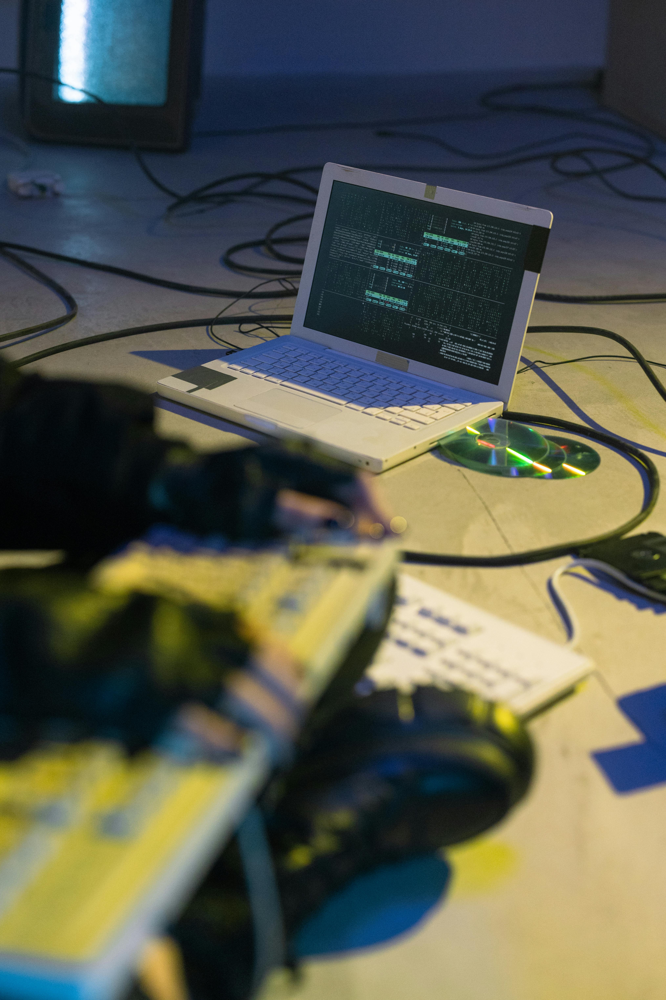

Projects we can deliver
Full-Stack Web Application - social media platform or e-commerce store
This project will involve front-end development using React, back-end development using Django or Node.js, and database management using SQL or MongoDB.
Skills: Python, JavaScript, React, Django, Node.js, SQL, MongoDB, Git

Data science projects
Analyze a real-world dataset, such as the Titanic dataset or a large dataset from Kaggle. Perform exploratory data analysis, build machine learning models (e.g., classification, regression, clustering), and visualize the results.
Skills: Python, R, Pandas, NumPy, Scikit-learn, TensorFlow, PyTorch, Matplotlib, Seaborn, Tableau

DevOps Automation Projects
Automate the deployment of a web application to a cloud platform using CI/CD pipelines. This project will involve setting up infrastructure using Terraform, building and deploying containerized applications using Docker and Kubernetes, and configuring CI/CD pipelines to automate the build, test, and deployment process.
Skills: AWS, GCP, Azure, Terraform, Ansible, Docker, Kubernetes, Jenkins, CircleCI, GitLab CI/CD, Bash, Python
